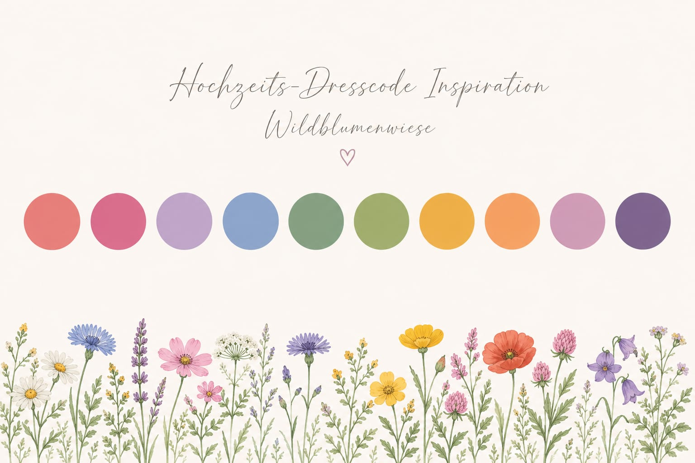

Für unsere Hochzeit gibt es keinen strikten Dresscode.
Uns ist am wichtigsten, dass ihr euch wohlfühlt und den Tag mit uns genießen könnt.
Wenn ihr euch bei der Wahl eures Outfits etwas Orientierung wünscht, freuen wir uns
über Farben, die an eine sommerliche Wildblumenwiese erinnern – von zarten Pastelltönen bis hin zu kräftigen Blumenfarben.
Die Farbpalette unten dient dabei lediglich als Inspiration. Fühlt euch aber bitte nicht daran gebunden.
Andere Farben sind genauso willkommen. Kommt einfach in einem Outfit, in dem ihr euch festlich, schön und ganz ihr selbst fühlt. ✨
